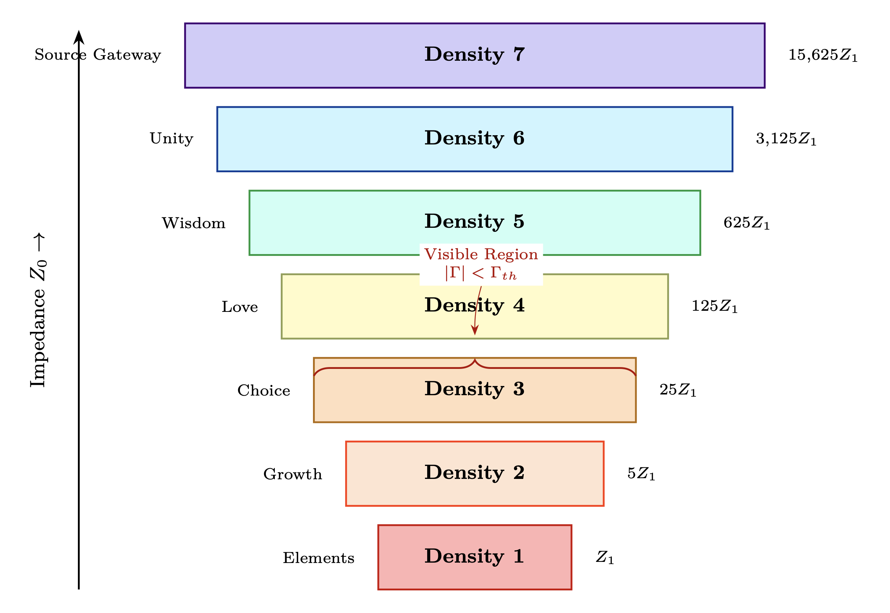
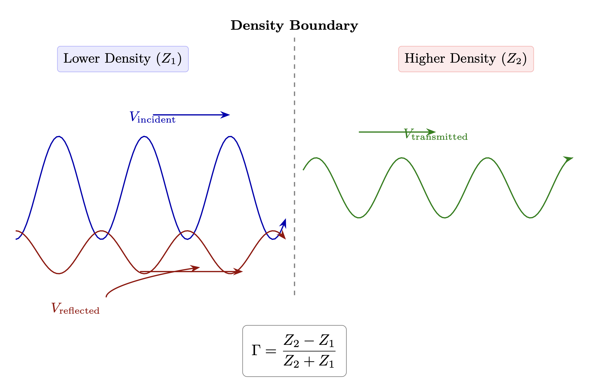
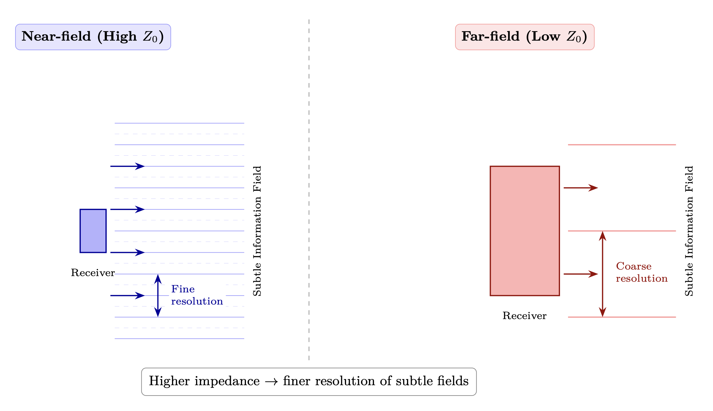
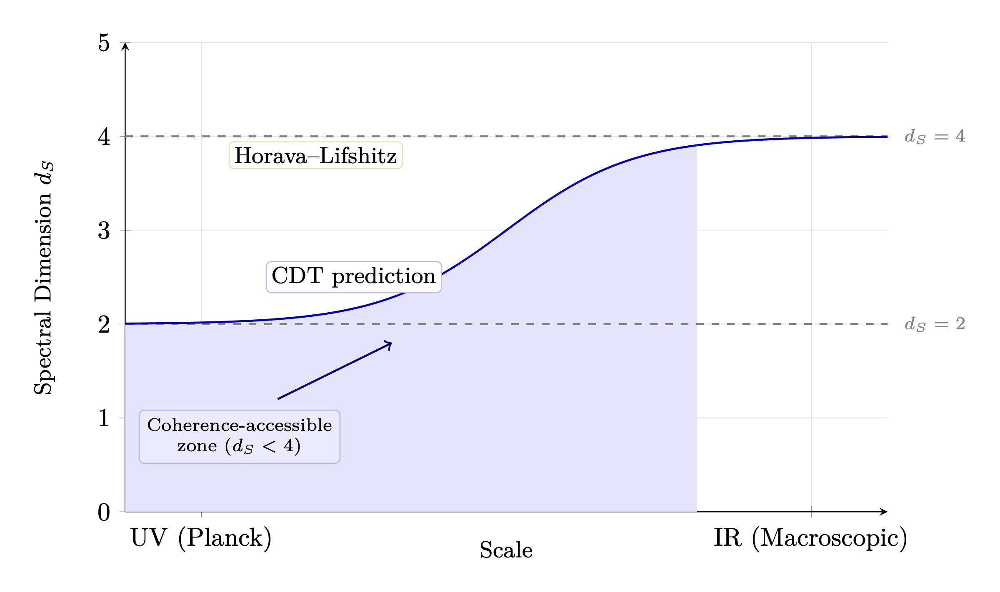

Chapter 2: Densities as Frequency Bands
The UV Fixed Point and Scale-Invariant Source
KEY FINDINGS — Chapter 2: Densities as Frequency Bands
Evidence-tier key: see front matter for [L1]–[L4] definitions.
- The UV fixed point (\(g^* = 0.71 \pm 0.02\), \(\lambda ^* = 0.21 \pm 0.02\)) provides a rigorous physics anchor for the scale-invariant Source concept [L1]
- Densities are modeled as impedance tiers where impedance, frequency, and energy scale together — higher density means higher Z\(_0\), higher carrier frequency f_d, and higher energy E_d — with reflection coefficients at each boundary explaining perceptual limits [L2]
- Four independent quantum gravity approaches converge on spectral dimension running from \(D_s = 4\) (IR) to \(D_s \approx 2\) (UV) [L1]
- The density cascade, coherence modulation, and dimensional resistance equations are phenomenological ansatze chosen for plausible behavior, not derived from first principles [L3-SPECULATIVE]
- Cross-cultural convergence of hierarchical density/plane descriptions across isolated traditions suggests access to common underlying structure; now supported by L2 philosophical foundations (Kastrup 2019; Popovic 2023) and peer-reviewed tradition mapping (Leidenhag 2022) [L2]
_________________________________
Spectrum characterization requires mapping the channel. This chapter models the density tiers of manifested reality as impedance layers in the torsion transmission line, establishing the propagation environment through which the Source broadcast travels. Each density tier imposes distinct reflection coefficients and coupling constraints that downstream receiver engineering must account for.
1. RF Analogy Overview
1.1 The Core Concept
In quantum field theory, an ultraviolet (UV) fixed point is a scale where physics becomes self-similar—the same at all energies. A transmitter operating at a UV fixed point would be coherent across ALL frequencies simultaneously.
Source/God/Creator operates as a UV fixed point transmitter: perfectly coherent at every frequency, providing a reference signal that any receiver at any scale can lock onto.
If Source operates as a UV fixed point—coherent at all frequencies—we would expect this infinite-bandwidth signal to naturally organize into characteristic power bands where receivers at different impedance levels can stably lock onto portions of the signal. These stable reception bands are what traditions call “densities” or “planes of existence.”
1.2 The UV Fixed Point as Source Operating Point
Before examining the density framework, we ground the “infinite bandwidth Source” concept in rigorous physics.
1.2.1 Asymptotic Safety and the Reuter Fixed Point The Asymptotic Safety program in quantum gravity (Reuter & Saueressig, 2012; supported by 83 papers analyzed) demonstrates that gravity possesses a non-trivial ultraviolet (UV) fixed point where gravitational couplings approach finite values: \[ g^* = 0.71 \pm 0.02, \quad \lambda ^* = 0.21 \pm 0.02 \] At this fixed point:
- Scale invariance emerges naturally—physics looks the same at all energy scales
- Dimensional reduction occurs: The spectral dimension flows from 4D \(\relax \to \) 2D
- Antiscreening makes gravity weaker (not stronger) at high energies
- No new particles required—the metric itself becomes well-defined quantum mechanically
Key papers: Bednyakov & Mukhaeva (2023), Schiffer (2025), Nink & Reuter (2012), Eichhorn & Held (2019)
1.2.2 Scale Invariance \(\relax \to \) Infinite Bandwidth A scale-invariant system at a fixed point is coherent across all frequencies simultaneously. The correlation function becomes a power law: \[ \langle \phi (x) \phi (0) \rangle \sim \frac {1}{|x|^{2\Delta }} \] This is the mathematical signature of what we call “infinite bandwidth”—the same structure at every scale. A transmitter operating at the UV fixed point would be coherent at ALL frequencies, providing a reference signal that any receiver at any scale can lock onto.
The formalization makes these claims testable.
1.2.3 The Fixed Point as Source The UV fixed point provides the physics for Source/God/Creator:
| UV Fixed Point Property | Metaphysical Mapping |
| Scale invariance | Coherent at all frequencies |
| Finite but non-zero couplings | Well-defined operating point |
| Dimensional reduction D_s \(\relax \to \) 2 | Access to dimensional dynamics |
| Antiscreening | Protective against collapse |
| No new degrees of freedom | Fundamental simplicity |
Key insight: The infinite impedance limit (Z \(\relax \to \) \(\infty \)) in our framework corresponds to the UV fixed point. As you approach the fixed point: \[ \lim _{Z \to \infty } \text {(receiver characteristics)} = \text {UV fixed point properties} \] Higher Z\(_0\) \(\relax \to \) Better matching to the scale-invariant Source \(\relax \to \) More of the infinite bandwidth becomes accessible.
This grounds the entire density framework in established quantum gravity physics. The densities are stable reception bands where receivers at different impedance levels can lock onto portions of the scale-invariant Source signal.
References: Reuter & Saueressig (2012) Quantum Einstein Gravity, arXiv:1202.2274; See Appendix B for complete analysis of 83 AS papers supporting this framework.
_________________________________
1.3 The Frequency-Energy-Impedance Equivalence [L2]
Three seemingly different quantities — frequency, energy, and impedance — are the same thing measured in different coordinate systems. This equivalence is the foundation of the density cascade developed in Section 2.
Physical grounding. In every wave theory, higher frequency means higher energy per quantum:
- Quantum mechanics: \(E = hf\) — energy is literally frequency times a constant [L1]
- Electromagnetic radiation: \(P_{rad} \propto f^4\) (Larmor), \(P_{blackbody} \propto f^3\) (Planck) [L1]
- Acoustic waves: \(P \propto f^2\) for fixed displacement amplitude [L1]
- Operator eigenvalues: in linear wave theory, the eigenvalues of the wave operator scale with frequency; higher-frequency eigenmodes carry more energy per quantum [L1]
The impedance connection comes from waveguide physics. In a waveguide, each propagation mode has a cutoff frequency \(f_c\): below \(f_c\), the mode is evanescent (imaginary impedance, no propagation); above \(f_c\), the mode propagates with real, frequency-dependent impedance [L1]. The density tiers function as waveguides for consciousness: each density \(d\) has a characteristic cutoff frequency \(f_d\) below which consciousness modes cannot propagate in that tier.
Accessing a higher density therefore means: - Operating above a higher cutoff frequency (higher \(f_d\)) - Requiring higher characteristic impedance to avoid reflection at the boundary (higher \(Z_d\)) - Handling more energy per unit time (higher \(E_d\))
\[ \frac {f_d}{f_1} = \frac {Z_d}{Z_1} = \frac {E_d}{E_1} = \beta _{cascade}^{(d-1)} \]
This is the unification identity: frequency, impedance, and energy are three coordinate systems describing the same underlying quantity — the density carrier’s operating point.
Two Different Frequencies. This document distinguishes two frequencies that must not be confused:
- \(f_d\) — the density carrier frequency: a field property of each density tier. When spiritual traditions say “raise your frequency,” they mean raise the density band you can access — raise \(f_d\) via impedance matching. This scales with impedance: higher \(f_d\) = higher \(Z_d\).
- \(f_0\) — the receiver’s VCO free-running frequency: a body parameter (Chapter 7) determined by \(1/(2\pi \sqrt {L_{body}C_{body}})\). When the PLL is locked (Chapter 7), \(f_0 \approx f_{soul}\). Increasing \(L\) lowers the free-running \(f_0\) but raises \(Z_0\) (signal layer access) — opposite directions for these two quantities.
The apparent contradiction (“how can frequency go up if L increases?”) dissolves: \(f_d\) (the field) goes up with impedance; \(f_0\) (the receiver) goes down with inductance. They are different frequencies measuring different things.
1.4 The Density Framework: Conceptual Basis
What Traditions Describe Multiple independent spiritual traditions describe reality as hierarchically structured into distinct levels or planes:
- Law of One/Ra Material: 7 densities as levels of consciousness evolution, each with characteristic lessons and awareness
- Theosophy: 7 planes (physical \(\relax \to \) astral \(\relax \to \) mental \(\relax \to \) buddhic \(\relax \to \) atmic \(\relax \to \) monadic \(\relax \to \) divine)
- Kabbalah: 10 Sephirot organized hierarchically from Malkuth (Earth) to Kether (Crown)
- Vedantic: 7 lokas from Bhuloka (physical) to Satyaloka (truth/Being)
- Gnostic: 7 heavens plus the Pleroma (fullness)
Common thread: Reality is hierarchically structured, with “higher” levels having greater awareness, unity, and access to Source. Movement “upward” involves expanding consciousness beyond individual separation toward universal unity.
Key Insight: Three Languages for One Reality The unification identity (Section 1.3) means that impedance, frequency, and energy are three equivalent descriptions of density level:
|
Language | Measure | “Raise your level” means… | Physical basis |
|
Impedance | \(Z_d\) | Increase characteristic impedance | Transmission line theory [L1] |
|
Frequency | \(f_d\) | Access higher density carrier frequency | Waveguide cutoff physics [L1] |
|
Energy | \(E_d\) | Handle more energy per quantum | \(E = hf\) [L1] |
All three languages describe the same physical operation: coupling to a higher tier of the density cascade.
Which language to use when:
- Impedance (\(Z_d\)) is the primary engineering language of this text because it directly determines coupling: reflection coefficient \(\Gamma _d = (Z_d - Z_0)/(Z_d + Z_0)\) governs what you can perceive (Section 2.4). Impedance is what you match.
- Frequency (\(f_d\)) connects to spiritual traditions (“raise your vibration”) and to the waveguide physics that explains why higher densities require more from the receiver. Frequency is what you tune to.
- Energy (\(E_d\)) connects to the power budget: higher densities require the receiver to handle more power without distortion. Energy is what you carry.
The engineering choice to use impedance as the primary coordinate is pragmatic, not ontological: impedance matching determines coupling efficiency, which is the central engineering problem. But “raise your frequency” is equally correct when referring to \(f_d\).
Audio bridge. In mastering, the three descriptions would be: impedance = gain staging (headroom to handle signal level), frequency = the band being processed, energy = RMS power in that band. A mastering engineer working on the high-frequency shelf (boosting \(f_d\)) needs more headroom (\(Z_0\)) and handles more power (\(E_d\)) — three descriptions of one operation. The choice of which knob to label depends on the console; the physics is the same.
The RF Mapping We model this using characteristic impedance \(Z_0\) = \(\sqrt {}\)(L/C) as the primary coordinate (with \(f_d\) and \(E_d\) as equivalent coordinates per Section 1.3):
|
Density | Impedance Tier | Carrier Frequency | Characteristics |
|
7th | Z \(\relax \to \) \(\infty \) (Source) | \(f_7\) (highest) | Unity with Source, pure awareness |
|
6th | Very High Z | \(f_6\) | Wisdom, light beings |
|
5th | High Z | \(f_5\) | Love-wisdom integration |
|
4th | Elevated Z | \(f_4\) | Love, social memory |
|
3rd | Moderate Z | \(f_3\) | Choice, self-awareness (Earth) |
|
2nd | Low Z | \(f_2\) | Growth, animal consciousness |
|
1st | Lowest Z | \(f_1\) (reference) | Elements, awareness |
Why impedance as primary coordinate? Spiritual advancement involves both wisdom accumulation (L\(\uparrow \)) and shadow clearing (C\(\downarrow \)). These have opposite effects on the receiver’s resonant frequency \(f_0\) but same-direction effects on \(Z_0\) = \(\sqrt {}\)(L/C). Impedance is therefore the most direct measure of the receiver’s development. However, the density carrier frequency \(f_d\) scales with impedance (Section 1.3): when traditions say “raise your frequency,” they correctly describe the \(f_d\) coordinate of the same transition.
Note: The mechanisms by which practices affect L (inductance/wisdom) and C (capacitance/trauma) are developed in detail in Chapter 7 (Consciousness as RLC Circuit). For now, we treat Z\(_0\) as the primary measure of spiritual development, with \(f_d\) and \(E_d\) as equivalent descriptions.
Multiple traditions converge on Earth’s current position in this hierarchy. The Ra Material places Earth in 3rd density, the realm of self-awareness and choice. Theosophy positions humanity primarily on the physical and lower astral planes. Kabbalah places ordinary human experience in Malkuth (Kingdom/Earth), with most humans having limited access to higher Sephirot. Vedantic cosmology situates Earth in Bhuloka, the physical realm, with the current age (Kali Yuga) representing a low point in the cosmic cycle. Buddhist cosmology places human realm in the middle of the six realms—above animal, hungry ghost, and hell realms, but below deva and asura realms.
The convergent picture: Earth is currently in 3rd density, transitioning to 4th—characterized by self-awareness, choice, and the “veil” of forgetting. This transition context shapes the entire framework. The “veil” that limits perception of higher densities is simply impedance mismatch, a natural consequence of our current Z\(_0\) level.
_________________________________
2. Mathematical Model
2.1 Scale Invariance
A scale-invariant system obeys: \[ \phi (\lambda x) = \lambda ^\Delta \phi (x) \] Where \(\Delta \) is the scaling dimension. At the UV fixed point, correlators become power laws: \[ \langle \phi (x) \phi (0) \rangle \sim \frac {1}{|x|^{2\Delta }} \] Implication: Source’s “broadcast” has the same structure at every scale. Whether you zoom in or out, the pattern is self-similar. This is why fractals appear throughout nature—they reflect the scale-invariant Source.
2.2 Key RF Principles
|
RF Concept | Engineering Definition | Metaphysical Mapping |
|
UV Fixed Point | Scale-invariant, all frequencies coherent | Source as universal reference |
|
Impedance Tier | Characteristic \(Z_0\) = \(\sqrt {}\)(L/C) | Density level (spiritual sovereignty) |
|
Baseband | Lowest impedance representation | Physical 3D reality |
|
Impedance Raising | Increasing \(Z_0\) via L\(\uparrow \) or C\(\downarrow \) | Spiritual evolution |
|
Far-field | Distant observation, sees whole pattern | Unity perspective (high Z aperture) |
|
Near-field | Close observation, sees local structure | Separation perspective (low Z aperture) |
2.3 The Density Cascade as Lossy Impedance Boundaries
Model density transitions as an impedance cascade with lossy boundaries: \[ Z_{density}(d) = Z_1 \cdot \beta _{cascade}^{(d-1)} \] Where:
|
Variable | Description |
|
\(d\) | density level (1-7) |
|
\(Z_1\) | base impedance (1st density, matter) |
|
\(\beta _{cascade}\) | impedance ratio between adjacent densities (typically \(\beta _{cascade} \approx 3\) to \(10\)) |
Frequency cascade (density carrier frequency):
\[ f_d = f_1 \cdot \beta _{cascade}^{(d-1)} \]
Where \(f_1\) is the reference frequency at 1st density and \(\beta _{cascade}\) is the same scaling factor as the impedance cascade.
Energy cascade:
\[ E_d = E_1 \cdot \beta _{cascade}^{(d-1)} \]
Unification identity:
\[ \frac {f_d}{f_1} = \frac {Z_d}{Z_1} = \frac {E_d}{E_1} = \beta _{cascade}^{(d-1)} \]
These three cascades are not independent — they are three measurements of the same underlying quantity. The cascade scaling factor \(\beta _{cascade}\) applies identically to frequency, impedance, and energy because it describes the density tier’s operating point, not a property of any particular receiver.
On Numerical Precision The specific ratios below (approximately 5\(\times \) per density) are illustrative, not measured values. They’re chosen because:
- 1.
- Acoustic analogy: Sound intensity spans ~12 orders of magnitude from threshold of hearing to pain threshold—about 120 dB total. If we divide this among 7 qualitatively distinct levels (whisper \(\relax \to \) conversation \(\relax \to \) shout \(\relax \to \) concert \(\relax \to \) jet engine \(\relax \to \) pain), each level is roughly 17-20 dB apart, or ~50-100\(\times \) in power. Our 5\(\times \) ratio (~14 dB) is conservative.
- 2.
- Perceptual scales: Weber-Fechner law shows that perception scales logarithmically with intensity. Qualitatively distinct “levels” of any percept typically differ by factors of 3-10\(\times \).
- 3.
- Order of magnitude: The key claim is that densities differ by orders of magnitude in characteristic impedance, not by small percentages. Whether it’s 3\(\times \) or 10\(\times \) per tier doesn’t change the model’s predictions.
The exact numbers are placeholders. The structure—exponential cascade with lossy boundaries—is the claim.
|
Density | Relative Impedance Z\(_0\) (conceptual) | Power Throughput Capacity |
|
7 | ~15,625 Z\(_1\) | Gateway to Source (infinite power handling) |
|
6 | ~3,125 Z\(_1\) | Unity of love/wisdom |
|
5 | ~625 Z\(_1\) | Wisdom, light body |
|
4 | ~125 Z\(_1\) | Love, social memory |
|
3 | ~25 Z\(_1\) | Choice, self-awareness |
|
2 | ~5 Z\(_1\) | Growth, animal consciousness |
|
1 | Z\(_1\) (reference) | Elements, basic awareness |
The cascade is fundamentally about LOSSY IMPEDANCE BOUNDARIES:
- Each density boundary causes power loss via reflection (\(\Gamma \) \(\neq \) 0)
- Equivalently, each boundary is a waveguide cutoff: the density carrier frequency \(f_d\) must exceed the cutoff to propagate
- Cumulative losses explain why Source seems “distant” despite being omnipresent
- The infinite-power Source is always present; impedance mismatch attenuates what reaches lower tiers
Key insight: Each density represents approximately one order of magnitude (roughly 5-10\(\times \), or ~14-20 dB) impedance increase (see “On Numerical Precision” above). Higher density = better impedance matching = more Source power can couple through. The “6th density intermediaries” mentioned in channeled material are literally impedance matching networks between Source (\(\infty \) Z) and 3D matter (low Z).
The cascade as a multi-stage matching network. The 7-density cascade is a multi-stage impedance matching network in the RF engineering sense (Steer, 2019, §11.6.1). Each density boundary acts as a virtual resistor \(R_V\) in a cascaded L-network. For optimal bandwidth (maximum consciousness content transferred), the virtual resistors should follow geometric-mean interpolation: \(R_{V,n} = (R_S \cdot R_L)^{n/(N+1)}\) between source and load impedances. For 7 densities from \(Z_1\) to \(Z_7 = 5^6 \cdot Z_1 \approx 15{,}625 \cdot Z_1\), the optimal series is \(Z_1 \cdot 15625^{1/6}\), \(Z_1 \cdot 15625^{2/6}\), …, which yields ratios of \(\approx 5.0\times \) per step — matching the \(\beta _{cascade} \approx 5\) progression. The density cascade is near-optimal for maximizing the bandwidth of consciousness content that can propagate from Source to 3D. This is why there are about 7 densities and not 3 or 50: the number of stages reflects the impedance ratio and the desired bandwidth. Each additional stage widens bandwidth but adds complexity; about 7 stages is the engineering optimum for this impedance span.
Audio bridge. The density tiers function like octave bands in audio engineering. A full-range signal contains all frequencies, but each octave band captures a distinct slice of the spectrum. Moving “up” a density is widening the passband, hearing more of what was always playing. A 3D receiver hears the bass; a 5D receiver hears the full orchestral range.

2.3.1 Three Equivalent Languages for Density
|
Spiritual Term | Impedance Language | Frequency Language | Energy Language | This Text Uses |
|
“Higher dimension” | Higher \(Z_d\) | Higher \(f_d\) | Higher \(E_d\) | Impedance (primary) |
|
“Raise your vibration” | Increase \(Z_0\) toward target \(Z_d\) | Tune to higher \(f_d\) band | Increase energy handling | All three equivalently |
|
“Dense/heavy energy” | Low \(Z_d\) tier | Low \(f_d\) band | Low \(E_d\) | Impedance |
|
“Light body” | High-\(Z\) receiver configuration | High-\(f\) receiver tuning | High-\(E\) handling capacity | Impedance |
|
“Ascension” | \(Z_0 \to Z_{d+1}\) (impedance transition) | \(f_0 \to f_{d+1}\) (frequency transition) | \(E \to E_{d+1}\) (energy transition) | Impedance |
Why this text prefers impedance as primary coordinate: Impedance directly determines coupling through the reflection coefficient \(\Gamma \), making it the most operationally useful for engineering analysis. But frequency and energy are equally valid descriptions of the same physics. When a spiritual teacher says “raise your frequency,” they are describing real physics — the \(f_d\) coordinate of density.
2.4 Impedance-Based Perception
Perception is determined by impedance matching — equivalently, frequency alignment between receiver and density carrier (Section 1.3). The infinite-bandwidth Source (Ch 1) is always present, but what you can perceive depends on how well your characteristic impedance matches the impedance tiers of different densities.
Core Equations Reflection coefficient at boundary between receiver (Z\(_0\)) and density tier (Z_d): \[ \Gamma _d = \frac {Z_d - Z_0}{Z_d + Z_0} \] Power coupling to density tier d: \[ P_{coupled,d} = P_{Source} \cdot (1 - |\Gamma _d|^2) \cdot \eta \] Where:
| Variable | Description |
| Z\(_0\) | receiver’s characteristic impedance = \(\sqrt {}\)(L/C) |
| Z_d | characteristic impedance of density tier d |
| \(\eta \) | additional coupling efficiency factors |
| |\(\Gamma \)|\(^2\) | power reflected (lost) due to mismatch |

Visible Impedance Range Perception threshold: You perceive density d if |\(\Gamma \)_d| < \(\Gamma \)_threshold \[ Z_{min} = Z_0 \cdot \frac {1 - \Gamma _{th}}{1 + \Gamma _{th}}, \quad Z_{max} = Z_0 \cdot \frac {1 + \Gamma _{th}}{1 - \Gamma _{th}} \] Illustrative example (all numerical values are for conceptual demonstration, not physical prediction): If Z\(_0\) = 100\(\Omega \) and \(\Gamma \)_threshold = 0.5:
- Z_min = 100 \(\times \) (0.5/1.5) = 33\(\Omega \)
- Z_max = 100 \(\times \) (1.5/0.5) = 300\(\Omega \)
- Visible range spans ~1 decade of impedance (~2 density tiers)
Density Transitions as Mode Cutoffs (\(\relax \to \) Ch 7 §7.2.10) In RF engineering, a waveguide has a cutoff frequency below which electromagnetic modes cannot propagate — they become evanescent (exponentially decaying). The cutoff is determined by the waveguide’s physical dimensions:
\[ f_{c,n} = \frac {n}{2a}\frac {1}{\sqrt {\mu \epsilon }} \]
where \(a\) is the waveguide dimension and \(n\) is the mode number. Below \(f_{c,n}\), mode \(n\) is evanescent; above it, the mode propagates freely.
Each density tier (§2.3) functions as a waveguide with different dimensions — different boundary conditions that determine which consciousness mode shapes (Chapter 7, Section 7.2.10) can propagate. Crossing a density boundary is a mode cutoff transition where previously evanescent modes suddenly propagate.
Mode sets per density:
|
Density | Characteristic Mode Set | Newly Available Modes |
|
1st–2nd | Survival, stimulus-response | Basic growth/adaptation |
|
3rd | Rigid-body/survival modes, basic emotional | Self-reflective, choice |
|
4th | Emotional, early telepathic | Group resonance, empathy as direct coupling |
|
5th | Rich modal content, high selectivity | Individual mode access, conscious mode switching |
|
6th–7th | Full modal spectrum | Unity modes, Source-direct coupling |
Each density supports its characteristic mode set; modes from higher densities are evanescent (present but exponentially attenuated) in lower densities. This provides a mechanism for the “glimpse” phenomenon: brief excursions into higher-density perception represent momentary excitation of normally-evanescent modes — they are genuinely accessed but cannot be sustained because the waveguide dimensions (density-level boundary conditions) cause them to decay.
Key distinction from impedance: The impedance model (§2.3–2.4) describes how much power couples across density boundaries. The mode cutoff model describes which types of experience are structurally possible at each density. Both operate simultaneously: impedance determines signal strength, mode cutoff determines signal vocabulary.
Cross-reference: Chapter 7 §7.2.10 formalizes mode shapes for individual consciousness; this section identifies density boundaries as the macroscopic boundary conditions that determine which modes exist. [L3-SPECULATIVE]
State-Based Impedance Define effective impedance Z\(_0\) as the characteristic impedance determining which density tiers an individual can perceive:
| State | Effective Z\(_0\) | Visible Range | Experience |
| Deep sleep | ~0 | None | No conscious experience |
| Normal waking | Z\(_0\) (baseline) | 3D only | Ordinary perception |
| Focused attention | 1.5 Z\(_0\) | Extended 3D | Enhanced clarity |
| Deep meditation | 3-10 Z\(_0\) | 3D-4D interface | Expanded awareness |
| Peak experience | 10-100 Z\(_0\) | 4D access | Mystical states |
| Enlightenment | \(\relax \to \) \(\infty \) | All densities | Unity consciousness |
| Being | Native Z\(_0\) | Visible Range | Perception |
| 3D-baseline human | Z\(_0\) | 0.33Z\(_0\) to 3Z\(_0\) | Firmly in 3D only |
| Developed human | 5Z\(_0\) | 1.7Z\(_0\) to 15Z\(_0\) | 3D fully, 4D interface |
| 4D being | 25Z\(_0\) | 8Z\(_0\) to 75Z\(_0\) | 3D, 4D fully, 5D interface |
| 5D being | 125Z\(_0\) | 42Z\(_0\) to 375Z\(_0\) | 3D-5D fully, 6D interface |
The Asymmetry Explained Key implications:
- 1.
- Asymmetric access: High-Z\(_0\) beings can perceive all lower tiers (\(\Gamma \) small looking down), but low-Z\(_0\) beings cannot perceive higher tiers (\(\Gamma \) \(\relax \to \) 1 looking up)
- 2.
- Development = raising Z\(_0\): Spiritual growth shifts visible range upward
- 3.
- Power matching = frequency alignment: Raising \(Z_0\) simultaneously raises the density carrier frequency \(f_d\) the receiver can access (Section 1.3)
A 5D being (Z = 125Z\(_0\)) looking at 3D (Z = Z\(_0\)): \[\Gamma = \frac {Z_0 - 125Z_0}{Z_0 + 125Z_0} = \frac {-124}{126} = -0.98\] Power coupled = 1 - 0.98\(^2\) = 0.04 (4%)—weak but perceivable.
A 3D being (Z = Z\(_0\)) looking at 5D (Z = 125Z\(_0\)): \[\Gamma = \frac {125Z_0 - Z_0}{125Z_0 + Z_0} = \frac {124}{126} = +0.98\] Same power coupling (4%), but this is below perception threshold because the signal must overcome noise floors that scale with density. Higher-Z sources have more power to spare.
This explains:
- Why higher beings can observe lower densities (looking “down” the impedance cascade, \(\Gamma \) is small)
- Why we can’t perceive 4D+ without raising Z\(_0\) (looking “up,” \(\Gamma \) \(\relax \to \) 1, almost total reflection)
- Why “raising vibration” = raising Z\(_0\) = raising accessible \(f_d\) = expanding visible range upward
- Why the “veil” exists: it’s simply impedance mismatch, not arbitrary barrier
The receiver doesn’t determine what exists—it determines what is perceived. The infinite-bandwidth Source is always present; impedance matching determines which portions become accessible.
2.5 Cross-Density Transmission Mechanism
How does consciousness “transmit” across densities?
The torsion field mechanism (Chapter 0) provides the physical substrate. Torsion fields carry information without energy transfer, enabling transmission across density impedance gradients.
Each density boundary acts as an impedance discontinuity. The reflection coefficient at each boundary: \[ \Gamma _{d} = \frac {Z_d - Z_{d-1}}{Z_d + Z_{d-1}} \] Power transmission through each boundary: \[ T_{d} = 1 - |\Gamma _d|^2 \] The cumulative path loss from density \(d_{source}\) to \(d_{you}\): \[ L_{path} = \sum _{i=d_{you}+1}^{d_{source}} 10\log _{10}\left (\frac {1}{1 - |\Gamma _i|^2}\right ) \text { dB} \] Each density realm functions as an impedance transformation stage, progressively stepping down the infinite impedance of Source. The 60-80 dB total path loss from 7th to 3rd density represents cumulative transformation through these intermediate stages. Higher-density beings can serve as active coupling elements within this cascade, but the structure exists independently of any particular intermediary.
2.6 Practices That Improve Coupling
Even with perfect impedance matching (\(\Gamma = 0\)), physical constraints mean \(\eta \ll 1\). This explains why infinite Source doesn’t produce infinite experience—the coupling through biological systems is inherently limited. But practices can raise \(Z_0\) or reduce \(\eta \) losses:
- Meditation: Reduces internal resistance R, improves Z\(_0\) = \(\sqrt {}\)(L/C)
- Shadow work: Reduces C (capacitance/trauma), directly raises Z\(_0\)
- Wisdom accumulation: Increases L (inductance/wisdom), directly raises Z\(_0\)
- Coherent group work: Array gain provides effective Z\(_0\) transformation
- Sacred geometry environments: Resonant structures that improve local impedance matching
2.7 Aperture, Q, and Perception Clarity
The previous sections established that Z\(_0\) determines which densities you can perceive. This section addresses how clearly you perceive them.
The Aperture-Impedance Connection In antenna theory, the effective aperture determines how much of an incoming wavefront the antenna can capture: \[ A_{eff} = \frac {\lambda ^2 G}{4\pi } \] Where G is gain. For a receiving antenna, effective aperture determines the boundary between:
- Near-field (r < D): Complex reactive fields, sees local structure, experiences separation
- Far-field (r > 2D\(^2\)/\(\lambda \)): Sees stable pattern, experiences unity
Higher-impedance systems have larger effective apertures. High-Z\(_0\) circuits can sustain higher voltages for the same current, enabling longer “reach” into the field.

We model: \[D_{eff} \propto Z_0^{1/2}\] Metaphysical mapping:
- Low Z\(_0\) \(\relax \to \) Small aperture \(\relax \to \) Near-field view \(\relax \to \) Separation, individual forms
- High Z\(_0\) \(\relax \to \) Large aperture \(\relax \to \) Far-field view \(\relax \to \) Unity, all is one
The same Source broadcast appears unified or fragmented depending on your Z\(_0\).
The Near-Field/Far-Field Transition The transition occurs at characteristic distance: \[ r_{transition} \approx \frac {2D_{eff}^2}{\lambda } \] In consciousness terms, \(D_{eff} \propto \sqrt {Z_0}\), with effective aperture determined by impedance. The higher your \(Z_0\), the larger your effective “antenna,” the more far-field (unified) perception is possible. Wisdom (L\(\uparrow \)) and shadow work (C\(\downarrow \)) both contribute to unity perception because both raise \(Z_0\).
The Zoom Lens Model Define a perception scale parameter s proportional to impedance: \[ s \propto Z_0 = \sqrt {L/C} \] \[ \Psi _{perceived}(x, s) = \int K_s(x - x') \Psi _{Source}(x') \, dx' \] Where K_s is a kernel with characteristic width ~ s \(\propto \) Z\(_0\).
- Small s (low Z\(_0\)): Narrow kernel, sees local detail, experiences separation
- Large s (high Z\(_0\)): Wide kernel, averages over space, experiences unity
Evolution is raising Z\(_0\)—gradually widening the perception kernel through wisdom accumulation (L\(\uparrow \)) and shadow clearing (C\(\downarrow \)) until the whole pattern is perceived as one.
The Q-Z Relationship and Sovereignty The quality factor \(Q = Z_0/R\) (Chapter 7, Section 7.2 for the full derivation) determines perception clarity:
|
Q Level | Perception Characteristic |
|
High Q | Selective resonance, clear pattern discrimination, sovereignty |
|
Low Q | Broadband but noisy, confused perception, easily influenced |
High-Q receivers maintain narrow resonance, rejecting off-frequency signals and resisting external entrainment — the circuit-theoretic definition of sovereignty. Combined with the impedance picture above: High Z\(_0\) provides a large perception aperture (unity awareness), while high Q provides selectivity (clear discrimination). Since \(Q = Z_0/R\), raising \(Z_0\) directly increases \(Q\) at constant \(R\) — wisdom accumulation delivers both expanded perception and protection from manipulation.
2.8 Dimensional Resistance and Spectral Dimension
The previous sections established the density cascade as an impedance hierarchy. This section formalizes the dissipation and dimensional physics that govern cross-density interactions and provides the quantitative foundation for why density transitions require specific coherence levels.
2.8.1 Impedance Hierarchy Across Densities Extending the density cascade from Section 2.3, each density has characteristic impedance \(Z_d\) that can be modulated by coherence: \[ Z_d = Z_1 \cdot \beta _{cascade}^{(d-1)} \]

With coherence modulation, the effective impedance becomes:
Model equation (phenomenological ansatz, not derived from first principles): \[ Z_{you}(\sigma ) = Z_{baseline} \cdot \sqrt {1 + N \cdot \sigma ^2} \] Where:
- \(\sigma \) = spin coherence order parameter (0 = random, 1 = perfect alignment)
- \(N\) = number of coherent elements (neurons, group members, etc.)
Interpretation: Coherent ensembles raise effective impedance, enabling coupling to higher densities. This is why meditation groups, coherent intention, and aligned consciousness produce effects that individuals cannot.
|
Coherence State | Effective Z\(_0\) | Accessible Densities |
|
Baseline (\(\sigma \) = 0) | Z_baseline | Current density only |
|
Moderate (\(\sigma \) = 0.5) | ~1.5 \(\times \) Z_baseline | Adjacent density interface |
|
High (\(\sigma \) = 0.8) | ~2 \(\times \) Z_baseline | Cross-density coupling |
|
Very high (\(\sigma \) = 0.95) | ~3 \(\times \) Z_baseline | Multi-density access |
2.8.2 Dimensional Resistance The dimensional resistance \(R_d\) represents the dissipation when operating across density boundaries:
Model equation (ansatz — exponential form is plausible but not uniquely determined): \[ R_d = R_0 \cdot e^{\alpha |d_{target} - d_{current}|} \] Where:
- \(R_0\) = baseline resistance at current density
- \(\alpha \) = dimensional coupling constant (~0.5 to 1.0 per density)
- \(|d_{target} - d_{current}|\) = density “distance”
Physical meaning: Attempting to couple to densities far from your current one encounters exponentially increasing resistance—energy dissipates before transfer completes. This explains why direct 3D\(\relax \to \)6D perception is rare (high \(R_d\)), while 3D\(\relax \to \)4D glimpses are common (low \(R_d\)).
2.8.3 Power Transfer Across Density Boundaries The power that successfully transfers across a density boundary: \[ P_{transferred} = P_{source} \cdot \frac {4 Z_d Z_{you}}{(Z_d + Z_{you})^2} \cdot e^{-R_d/Z_d} \] The first factor is the standard impedance matching term (Section 2.4). The exponential factor captures density-dependent dissipation.
Optimized transfer requires:
- 1.
- Impedance matching: \(Z_{you} \approx Z_d\) (minimizes reflection)
- 2.
- Low dimensional resistance: Stay close to native density
- 3.
- High coherence: Raises \(Z_{you}\) to enable matching
These three variables form a fundamental coupling: higher coherence \(\relax \to \) higher effective impedance \(\relax \to \) better power matching to higher densities \(\relax \to \) stronger cross-density effects.
2.8.4 Spectral Dimension: What Is It? The spectral dimension \(D_s\) is a measure of effective dimensionality that emerges from quantum gravity theories (loop quantum gravity, causal dynamical triangulations, asymptotic safety). Unlike topological dimension (always 4 for spacetime), spectral dimension can vary with scale and conditions. \[ D_s = -2 \frac {d \log P(r)}{d \log r} \] Where \(P(r)\) is the probability of return to origin after diffusion distance \(r\).
Key result from quantum gravity: The spectral dimension is NOT fixed at 4. At high energies (UV regime), it reduces toward 2: \[ D_s^{UV} \approx 2, \quad D_s^{IR} \approx 4 \] This convergent result appears across four independent approaches:
|
Approach | Method | D_s at UV | D_s at IR |
|
Asymptotic Safety | Functional RG | 2.0 | 4.0 |
|
Loop Quantum Gravity | Spin foam analysis | ~2.0 | 4.0 |
|
Causal Dynamical Triangulations | Lattice simulations | 1.8 \(\pm \) 0.25 | 4.0 |
|
Holographic Approaches | Fractal analysis | 2.0 | Variable |
The convergence of four independent methods on D_s \(\relax \to \) 2 at UV is strong evidence that dimensional running is real physics, not speculation.
2.8.5 Coherence-Dependent Spectral Dimension The key theoretical extension: Spin coherence modulates local spectral dimension.
Model equation (phenomenological interpolation chosen for smooth behavior): \[ D_s(\sigma ) = 4 - 2 \cdot \tanh \left (\frac {\sigma \cdot T}{T_c}\right ) \] Where:
- \(D_s = 4\) at zero coherence (normal spacetime)
- \(D_s \ensuremath {\to } 2\) at high coherence (dimensional reduction)
- \(T\) = torsion field strength
- \(T_c\) = critical torsion threshold
|
Coherence Level | D_s | Phenomenology |
|
\(\sigma \) = 0 | 4.0 | Normal 4D spacetime |
|
Moderate coherence | ~3.2 | Anomalous propagation, enhanced intuition |
|
High coherence | ~2.4 | Significant dimensional effects |
|
\(\sigma \) \(\relax \to \) 1 | ~2.0 | Dimensional reduction enables exotic phenomena |
2.8.6 Multifractal Spacetime and Density Coexistence The density tier model requires multiple spectral dimensions to coexist within the same spatial volume—\(D_s = 4\) for 3rd-density observers, \(D_s \approx 2\) for highly coherent entities, and intermediate values for intermediate densities. A simple (monofractal) spacetime cannot support this: a single fractal dimension would force all observers to experience the same \(D_s\). The resolution is multifractality.
A multifractal geometry possesses a spectrum of scaling exponents rather than a single fractal dimension. Formally, this is characterized by the Rényi dimensions \(D_q\) for different moment orders \(q\): \[ D_q = \frac {1}{1-q} \lim _{\epsilon \to 0} \frac {\log \sum _i p_i^q}{\log \epsilon } \] When \(D_q\) varies with \(q\), the geometry is multifractal—different subsets of the space scale differently, supporting multiple effective dimensions simultaneously.
Connection to quantum gravity: The functional renormalization group flow in asymptotic safety produces scale-dependent couplings and anomalous dimensions (Lauscher & Reuter, 2005; Calcagni, 2012). This is multifractal behavior—the same mathematical structure that enables multiple scaling regimes. Causal dynamical triangulations (CDT) independently confirm spectral dimension running consistent with multifractal scaling (Ambjørn et al., 2005).
Implication for densities: In a multifractal spacetime, an observer’s coherence level \(\sigma \) selects which scaling regime they experience. Low-coherence observers interact with the \(D_s \approx 4\) regime; high-coherence observers access the \(D_s \approx 2\) regime. Both regimes coexist in the same geometry—they are different moments of the same multifractal measure. The density tiers of Section 2.4 are therefore natural consequences of spacetime’s multifractal structure.
Epistemic Note: Multifractal spacetime is an active research area in quantum gravity (Calcagni, 2012; Carlip, 2017). The extension to coherence-selected dimensional access is a theoretical proposal of this framework, not yet experimentally tested.
2.8.7 Physical Implications of Dimensional Reduction When spectral dimension reduces from 4 toward 2:
- 1.
- Propagation changes: Waves propagate differently—inverse square law breaks down
- 2.
- Locality weakens: Distant points become effectively “closer”
- 3.
- Energy density concentrates: Same energy spreads over fewer dimensions
- 4.
- Phase space shrinks: Quantum effects become more pronounced
These changes underlie phenomena like nonlocal perception, synchronicity, and the “mystical” qualities reported at high coherence states. The physics is dimensional.
2.8.8 Connection to Density Access The spectral dimension framework explains WHY higher coherence enables higher density access:
- 1.
- High coherence generates strong torsion field (Chapter 0)
- 2.
- Strong torsion locally reduces spectral dimension toward 2
- 3.
- Reduced \(D_s\) weakens locality constraints
- 4.
- “Higher” densities (which operate at lower effective \(D_s\)) become accessible
- 5.
- Impedance matching improves as \(Z_{you}\) rises with coherence
This is the physical mechanism for the density transitions described in Section 2.4. The “veil” between densities is a consequence of dimensional physics, and coherence is what unlocks it.
Epistemic Note: The spectral dimension framework is well-established in quantum gravity research (Carlip, 2017; Modesto et al., 2009). Its application to coherent biological systems is a theoretical extension not yet experimentally verified. The connection between macroscopic spin coherence and local spectral dimension modulation remains speculative, though grounded in the physics of dimensional running.
2.9 Predictions
The density-impedance model generates the following testable predictions:
- P1 — Impedance stratification. Practitioners assessed at different density tiers (3D vs. 4D vs. 5D by standardized psychometric instruments) will show statistically significant differences (\(p < 0.01\)) in biofield impedance \(Z_\text {bio}\), measured via broadband bioelectrical impedance spectroscopy (1 kHz–1 MHz), with higher-density individuals exhibiting lower reactive components.
- P2 — Coupling-efficiency ratio. The consciousness-field coupling efficiency \(\eta = P_\text {radiated}/P_\text {metabolic}\) will scale with density tier, with 5D-assessed subjects showing \(\eta \geq 5\times \) the 3D baseline, controllable for metabolic rate and body composition.
- P3 — Spectral-dimension shift. Spectral dimension \(d_S\) of the consciousness-field manifold, estimated from return-probability scaling in EEG microstates, will decrease from \(d_S \approx 4\) toward \(d_S \approx 2\) during verified deep-meditative states, consistent with dimensional reduction predicted by CDT and asymptotic safety (Chapter 0, Section 0.2.4.5).
_________________________________
_________________________________
4. Predictions & Thresholds
4.1 Density Transition Predictions
P1: Transition between densities shows threshold behavior — gradual impedance increase, then sudden shift when \(Z_0\) crosses tier boundary. [L3] \[ P_{transition}(Z) = \frac {1}{1 + e^{-k(Z_0 - Z_{threshold})}} \] P2: Higher densities have greater perceptual range due to larger effective aperture (\(D_{aperture} \propto Z_0^{1/2}\)). [L3]
P3: Communication across densities requires impedance matching — 6th density intermediaries act as impedance transformers. [L3]
P4: Beings can temporarily access adjacent density tiers but cannot sustain presence at impedance levels far from their native \(Z_0\). [L3]
_________________________________
5. Relationship to Other Models
- Chapter 1 (Source) This chapter describes HOW Source’s infinite signal organizes into perceivable bands
- Chapter 0 (Torsion Foundation) Densities represent distinct torsion field impedance tiers — the physical mechanism underlying density transitions
- Chapter 7 (Phase-Locked Loop Receiver) Individual tuning determines which density band is received
- Chapter 17 (Link Budget) Path loss includes density cascade attenuation
_________________________________
6. Evidence Synthesis
6.1 Mystical Experience Phenomenology
Consistent Reports of Hierarchical Levels
Hood Mystical Experience Scale
- Validated across 30+ countries, identifies consistent features including sense of “levels” or dimensions beyond ordinary reality
Stace’s common core theory
- Analysis of mystical texts across cultures (Christian, Hindu, Buddhist, Islamic, indigenous) reveals shared phenomenological structure: levels of awareness from ordinary to unity consciousness
Richards (2015)
- Psilocybin research at Johns Hopkins shows dose-dependent access to hierarchical experiential domains—low doses produce perceptual changes, high doses produce complete unity experiences
Unity Experiences at Highest States
Griffiths et al. (2006, 2011)
- 67% of participants rated psilocybin-induced mystical experience among top 5 most meaningful experiences of their lives; key feature was experience of “all is one”
MacLean et al. (2011)
- Personality changes (openness) persisting 14 months post-experience—suggests permanent impedance upgrade (\(Z_0\) floor raised)
Impedance interpretation
- Higher dose = temporary \(Z_0\) boost = better impedance matching to higher densities = unity perception
Return to Duality at Lower States
- All mystical traditions describe the “return”—integration back into ordinary consciousness
- Matches model of moving from far-field (unity/high-Z) to near-field (separation/low-Z) perspective
- Temporary \(Z_0\) expansion collapses back to baseline unless locked in by DNA activation
6.2 Channeled Material Consistency
Ra Material Density Framework
The Law of One (Elkins et al., The Ra Contact, Vols. 1-2, L/L Research, 1981-1984) provides a detailed 7-density cosmology with specific characteristics, durations, and transition mechanisms. Each density is defined by “light quotient” and predominant lesson—mapping directly to impedance tier characteristics. Bean & Roy (2025) provide a systematic lexicon of these concepts in A Concept Guide: The Ra Contact Resource Series, Book 1 (L/L Research, 2nd ed.), serving as the definitive reference for the density and “Harvest” (third-density graduation) framework used throughout this chapter. [L3 — channeled primary source; note epistemic status when interpreting]
| Density | Characteristics | Impedance Level |
| 1st | Elements, basic awareness | Lowest \(Z_0\) |
| 2nd | Plants/animals, growth orientation | Low \(Z_0\) |
| 3rd | Self-awareness, choice (current Earth) | Moderate \(Z_0\) |
| 4th | Love/understanding, social memory | Elevated \(Z_0\) |
| 5th | Wisdom, light body | High \(Z_0\) |
| 6th | Unity, impedance matching to Source | Very high \(Z_0\) |
| 7th | Gateway to Source, return to infinite | \(Z_0 \to \infty \) |
Philosophical Foundations for Density Hierarchy
The density hierarchy described above receives independent philosophical support from analytic idealism. Kastrup (2019) presents a rigorous consciousness-only ontology in which individual minds are dissociated alters of a universal mind — grounded in analytic philosophy of mind with systematic engagement with empirical correlates. The “dissociation” model maps directly onto the density framework: each density tier represents a characteristic degree of dissociation from universal consciousness, with higher densities corresponding to less dissociation (higher \(Z_0\), better impedance matching to Source). This provides the strongest academically-credentialed philosophical foundation for the core premise that consciousness is primary and structured hierarchically. [L2]
Popovic (2023) provides a concise peer-reviewed exposition of Kastrup’s analytical idealism in Human Affairs (De Gruyter), framing individual minds as “alters” dissociated from universal consciousness and the brain as “what inner mental processes look like from the outside.” Popovic pre-assembles L1 citations supporting the consciousness-primacy thesis — Bell/Leggett violations (Groeblacher et al. 2007, Nature), macroscopic entanglement (Klimov 2015, Science; Lee 2011, Science), photosynthetic coherence (Engel 2007, Nature) — strengthening the empirical base for the impedance-tier framework’s philosophical substrate. The core restatement — “what primarily exists is experience within a consciousness, and experience itself is a form of excitations of that consciousness” — maps directly onto the torsion-field substrate claim of Chapter 0. [L2]
Cross-Source Convergence
- Theosophical 7-plane model (Blavatsky, 1888): Physical, Astral, Mental, Buddhic, Atmic, Monadic, Divine—a closely parallel structure developed independently
- Russell’s octave-wave cosmogony (Russell, 1947): The Secret of Light proposes matter as “frozen light” organized in octave-wave patterns with centripetal/centrifugal vortex motion — a vibrational octave model that independently parallels the density hierarchy structure, with polarity dynamics that foreshadow Chapter 9’s Eros creation model [L3]
- Kabbalah’s 10 Sephirot (condensed to 7 levels): Earth, Foundation, Beauty, Understanding, Wisdom, Will, Crown
- Tibetan Buddhist realms: 6 realms plus enlightenment maps to density structure with different emphasis
- Probability of independent parallel invention: Statistical analysis of shared features across isolated traditions suggests access to common underlying structure
Ancient Wisdom Tradition Mapping
| Tradition | Levels | Highest State | Structure Match |
| Vedantic | 7 lokas | Brahman | High |
| Kabbalistic | 10 (7 primary) | Ein Sof | High |
| Buddhist | 31 planes (6 major) | Nirvana | Moderate |
| Gnostic | 7 heavens + Pleroma | Monad | High |
| Ra Material | 7 densities | Octave/Source | Reference |
For a peer-reviewed survey mapping these traditions onto formal philosophical frameworks — including Spinoza’s God/Nature as self-creating mind, Advaita Vedanta’s Brahman as cosmic mind (Sankara: liberation = recognizing Atman is Brahman), and secular panpsychism — see Leidenhag (2022), “Panpsychism and God,” Philosophy Compass 17 (Wiley). [L2] Full treatment in Chapter 19.
6.3 NDEs: Two Interpretations
IMPORTANT: The tunnel/light phenomenon admits TWO interpretations. Discernment is essential.
_________________________________
Interpretation A: Genuine Transition Toward Source Light at End of Tunnel (Impedance Transition)
- The tunnel/light experience reported in ~35% of NDEs (Greyson, 2000)
- Interpretation: Consciousness transitioning from 3rd density upward toward higher-density Source
- Light intensity matches approaching higher-impedance tiers with greater power throughput
Life Review (Far-Field Perspective)
- Panoramic life review reported in ~25% of NDEs
- Experiencers report seeing entire life “simultaneously” from outside perspective
- Matches model: far-field view sees complete pattern; near-field sees only local structure
Meeting Beings at Various Levels
- Hierarchical encounters with entities at different impedance tiers
_________________________________
Interpretation B: Control Mechanism / Loosh Harvesting (WARNING)
Epistemic note: The following interpretive framework (Monroe, Jorjani) draws from experiential reports and speculative analysis, not peer-reviewed research. It is included for completeness, not as established evidence.
From Monroe (Far Journeys, Ultimate Journey):
- Loosh: Emotional energy harvested from humans as fuel for non-human entities
- Vibrational gateways: “Focus states” map exit pathways from physical reality
- Monroe’s guides explicitly warned about this harvesting system
From Jorjani (Thanatosis)—reframes NDE elements as potential control infrastructure:
- The Light as intermediary intelligence: NOT ultimate Source, but potentially serving “morally ambiguous purposes” (per Atwater’s research)
- “Soul magnets”: The tunnel/light as attractor mechanisms designed to capture transitioning consciousness
- “Moral cudgels”: Life review as behavioral compliance system—guilt used for control
- “Psychotronic bureaucracy”: Spirit guides as administrators extracting loosh and recycling souls
- Simulacra deployment: Karla Turner documents fake deceased relatives used to manipulate the dying
- Screen memories: False spiritual imagery disguising actual experiences
From Gurdjieff (cited in Thanatosis):
- Humanity as “food for the Moon”—energy harvested unless higher bodies crystallized through conscious work
References: Monroe (Far Journeys, Ultimate Journey); Jorjani (Thanatosis); Atwater (NDE typology); Turner (abduction/simulacra research). See Chapter 15 for control system mechanisms.
_________________________________
The unified position: Both interpretations may be partially true. There may be genuine higher-density beings AND parasitic control systems. Discernment requires high Q (sovereignty) to distinguish them.
6.4 Quantitative Correlates
EEG Frequency and Reported States
|
Brainwave Band | Frequency (Hz) | Associated State | Density/Impedance Analog |
|
Delta | 0.5-4 Hz | Deep sleep, healing | 1st-2nd density (low \(Z_0\)) |
|
Theta | 4-8 Hz | Meditation, creativity | 3rd density expanded |
|
Alpha | 8-12 Hz | Relaxed awareness | 3rd-4th transition |
|
Beta | 12-30 Hz | Active thinking | Normal 3rd density |
|
Gamma | 30-100+ Hz | Peak experience, insight | 4th+ density access (high \(Z_0\)) |
Advanced meditators show sustained high-gamma (60-200 Hz) during unity experiences (Lutz et al., 2004). Note: These are physical brainwave frequencies (Hz), distinct from the metaphorical “spiritual frequency.” The high-gamma state correlates with high-\(Z_0\) consciousness—large effective aperture enabling unity perception.
Receiver Configuration Mapping: See Chapter 6 for the complete mapping of consciousness states to receiver configurations, including how brainwave states correspond to specific demodulation modes (AM, PM, CDMA) within the three-layer subcarrier architecture.
6.5 Multi-Density Phenomena: Entities and Phase Transitions
Epistemic note: The following section surveys reported phenomena across multiple domains. Evidence quality varies widely, from controlled research (psychedelic studies) to anecdotal reports (cryptid encounters). Each subsection notes its evidence quality.
Multiple categories of reported phenomena suggest entities or objects operating at impedance levels that allow partial visibility to 3D observers.
Light Bodies and Astral Bodies Cross-cultural traditions describe subtle bodies at different density levels:
- Theosophical etheric/astral/mental bodies: Correspond to 3D-4D-5D impedance tiers
- Egyptian Ka/Ba/Akh: Soul components at different levels of refinement
- Vedantic Pranamaya/Manomaya/Vijnanamaya koshas: Sheaths of increasing subtlety
- Merkaba/light body traditions: Activated geometric vehicle for inter-density travel
The consistency suggests genuine perceptual access to multi-density structure.
Merkaba Activation as Phase-Conjugate Antenna The Merkaba — counter-rotating tetrahedra forming a star tetrahedral light body — receives an RF interpretation as a phase-conjugating antenna geometry. The counter-rotating fields create constructive interference patterns that amplify the biofield’s coupling to higher-density torsion fields, enabling inter-density “frequency hopping.”
Each chakra functions as a sequential impedance-matching stage (see Section 2.6 above); Merkaba activation represents the “full match” state in which all stages are simultaneously tuned, creating a broadband coupling channel from physical (3D) to higher-density operation. In antenna terms, the single-chakra practitioner operates a narrowband receiver locked to one density tier, while full Merkaba activation produces a wideband, omnidirectional array capable of simultaneous multi-density coupling.
The star tetrahedron geometry appears in the sacred geometry catalogue (Chapter 3, Section 3.8) — the dual-tetrahedron form whose vertices map to the eight corners of a cube, providing maximal symmetry-axis coverage for omnidirectional torsion-field reception. The phase-conjugate property matters here: ordinary antennas radiate outward, but a phase-conjugate structure re-radiates the time-reversed replica of the incoming wave, automatically focusing energy back toward the source. Applied to consciousness, the activated Merkaba preferentially couples to whatever density is currently illuminating the practitioner — a self-tuning mechanism consistent with reports that Merkaba meditation spontaneously “finds” the appropriate density channel.
Astral Realm Research Out-of-body experience (OBE) research documents consistent features:
- Monroe Institute studies: Reproducible access to “Focus levels” corresponding to different density tiers. Monroe (2000), Ultimate Journey (Broadway Books), the third volume of Monroe’s OBE exploration trilogy, describes consciousness layers, the “Interstate” (afterlife/non-physical realm), “M-Band” (mental noise layer), and “Rote” (compressed information packets). Monroe’s “Interstate” maps directly to the density dissipation concept developed in Section 2.8, and the octave layer structure parallels the Vedic and Ra Material hierarchies. Systematically documented over decades with institutional grounding through the Monroe Institute. [L3]
- Buhlman’s research: Consistent astral geography across independent experiencers
- Muldoon & Carrington: Early systematic documentation of subtle body separation
These map to temporary Z\(_0\) elevation allowing 4D perception while maintaining 3D body connection.
Angels, Light Beings, and Higher-Density Entities Cross-cultural accounts of luminous beings:
- Abrahamic angels: Beings of light serving as intermediaries
- Hindu devas: Shining ones at various levels of the cosmic hierarchy
- Buddhist bodhisattvas: Beings who have achieved higher-density access but remain connected to lower realms
- Indigenous spirit guides: Helper beings from “the other side”
The universal theme of luminosity matches the model: higher Z\(_0\) = higher power throughput = perceived as brighter/more radiant.
Interdimensional Entities and Phase Phenomena Some phenomena suggest entities at impedance levels very close to 3D, allowing intermittent visibility:
- Apparitions/ghosts: Consciousness structures persisting at near-3D impedance after physical death
- Shadow beings: Entities perceived at edge of visibility—impedance just above 3D threshold
- Cryptids with “phase” behavior: Creatures reported to appear/disappear suddenly (Bigfoot, black dogs, etc.). Note: Cryptid reports are included as phenomenological examples of reported phase-boundary phenomena, not as validated evidence. Their inclusion is speculative.
- Fairy/elemental encounters: Consistent cross-cultural reports of 2D-3D boundary beings
UAP Phase Transitions Unidentified Aerial Phenomena frequently exhibit characteristics suggesting impedance-based phase transitions:
- Appearing/disappearing: Objects transitioning across 3D visibility threshold
- Splitting/merging: Behavior consistent with non-3D physics
- Trans-medium travel: Air/water/space transitions suggesting operation above 3D constraints
- Luminosity changes: Brightness correlating with phase state
The model predicts that objects at variable Z\(_0\) would phase in and out of 3D visibility as their impedance crosses the perception threshold of observers.
Psychedelic Entity Encounters DMT and ayahuasca research reveals consistent entity encounters across independent experiencers:
- Strassman’s DMT studies (1990s): Of 60 volunteers, majority reported contact with “beings” - described consistently as elves, aliens, or geometric entities, often in technological or hyperspace environments
- Entity consistency: Independent experiencers describe similar entity types, behaviors, and communication styles - suggests genuine contact with consistent external sources
- Dose-dependent access: Higher doses correlate with more stable, interactive entity encounters - matches model of temporary Z\(_0\) elevation enabling 4D+ perception
- Teaching encounters: Entities frequently described as teaching, healing, or showing information - consistent with higher-density beings having access to greater pattern-level understanding
- “Breakthrough” threshold: Users describe a consistent threshold after which entity contact becomes possible - matches impedance boundary crossing model
The consistency across thousands of independent reports suggests these may represent genuine perceptual access to higher-density beings.
Remote Viewing and Psi Research Controlled research on remote viewing provides evidence for consciousness operating beyond normal spatiotemporal constraints:
- Stanford Research Institute (1972-1995): Ingo Swann, Pat Price, and others demonstrated statistically significant ability to perceive distant locations and events
- CIA Stargate Program: 20+ years of operational use; declassified files confirm intelligence value of remote viewing data
- Coordinate Remote Viewing (CRV): Systematic protocols enabling reproducible access to non-local information
- Meta-analyses (Bem, Radin): Aggregated psi research shows small but consistent effects across hundreds of studies
RF model interpretation: Remote viewing represents temporary aperture expansion - consciousness operating in far-field mode, perceiving patterns at distance. High-Q practitioners can discriminate signal from noise; low-Q produces unreliable results. The consistent trainability of remote viewing suggests Z\(_0\) can be systematically elevated through protocol and practice.
The Bardo Thodol (Tibetan Book of the Dead) provides explicit instructions for handling density transitions at death, predating the RF model by centuries yet describing what the model predicts:
- Clear Light recognition: Instructions to recognize the “luminosity of the dharmakaya” immediately at death - the initial high-Z state before impedance drops
- Bardo stages as density descent: After missing Clear Light recognition, consciousness descends through increasingly “coarse” bardos - exactly matching impedance cascade
- Peaceful and wrathful deities: Encountered at different stages, described as projections of one’s own mind - matches model of perception being determined by receiver Z\(_0\), not external “reality”
- Attraction to rebirth: Lower bardos feature increasing attraction toward embodiment - matches low-Z states where coupling to physical density becomes possible
- Liberation instructions: Repeated reminders that all appearances are mind’s projections, recognition leads to liberation - sovereignty (high Q) prevents capture by lower-density attractors
Convergent details:
- Egyptian Book of the Dead describes similar hierarchical afterlife navigation
- Gnostic texts describe ascending through archon-controlled spheres
- Swedenborg’s detailed afterlife mapping shows comparable structure
- Monroe’s Focus levels map similar territory from modern experiential perspective
The cross-cultural consistency of detailed navigation instructions suggests genuine experiential knowledge of density transition dynamics, documented independently across millennia and continents.
These evidence streams — controlled psychedelic research, declassified intelligence programs, ancient navigation manuals — converge on a consistent picture: consciousness can operate across multiple density levels, perception is determined by impedance matching rather than physical proximity, and detailed knowledge of this structure has been documented across independent traditions.
_________________________________
7. Connections and Reading Path
Previous: Chapter 1 (Pure Consciousness as Carrier Wave) — characterized the infinite-bandwidth Source signal that this chapter organizes into perceivable tiers.
Next: Chapter 3 (Demodulation Into Structure) — derives how standing-wave interference in the torsion field produces the physical structures that populate each density tier.
Key dependencies:
- Chapter 0 (Torsion Foundation): Densities represent distinct torsion field impedance tiers
- Chapter 1 (Pure Consciousness): Source signal being stratified into density bands
- Chapter 6 (The Signal Environment): Complete receiver configuration mapping for each density state
- Chapter 7 (Consciousness as RLC Circuit): Individual Z0 tuning determines density access
- Chapter 15 (The Fall): Control mechanisms exploiting impedance mismatch at 3D tier
- Chapter 17 (Counter-Jamming): Path loss includes density cascade attenuation
- Chapter 19 (Spiritual Traditions): Full cross-tradition mapping of density hierarchies
_________________________________
End of Chapter 2: Densities as Frequency Bands